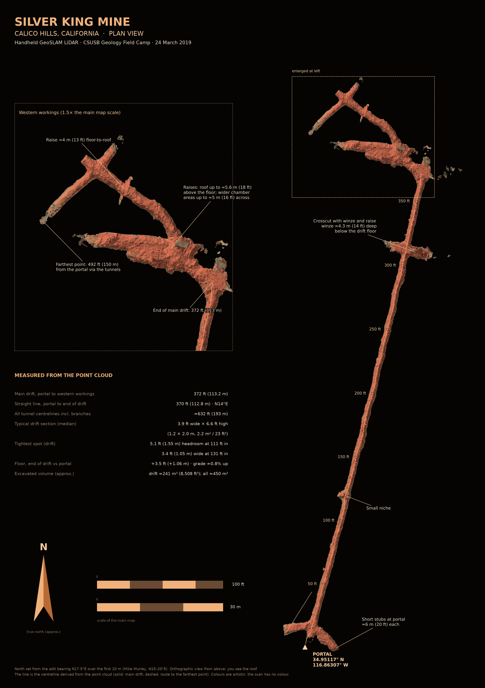
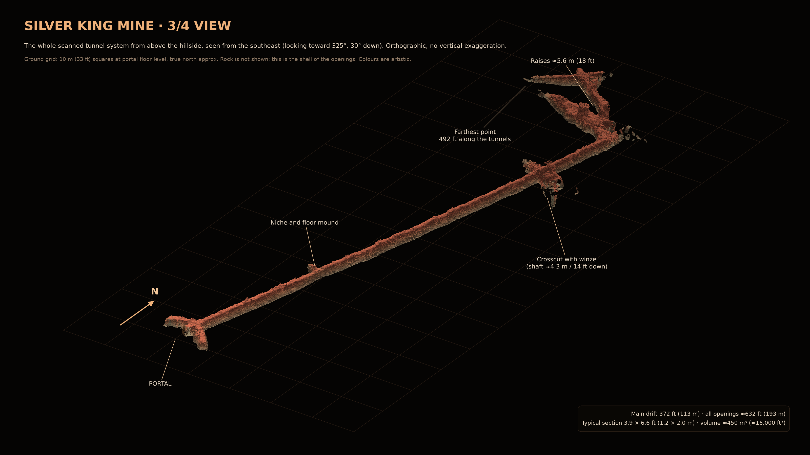
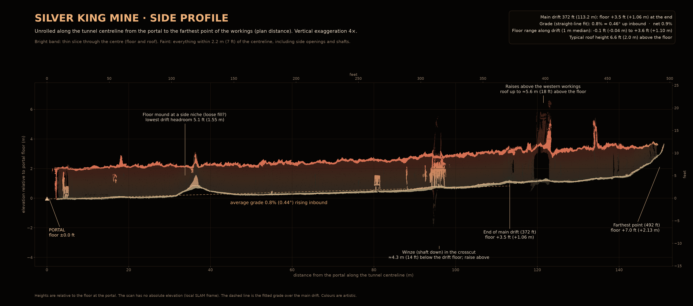
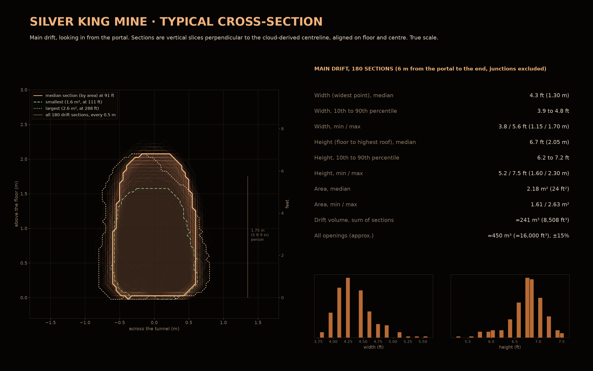

Silver King Mine · Maps & Measurements
CSUSB Geology Field Camp · 24 March 2019 · led by Dr. Erik Melchiorre
Walk through the tunnel



Measured from the point cloud
| Measurement | Value |
|---|---|
| Main drift | 372 ft (113.2 m) |
| Straight line | 370 ft, about N14°E |
| All openings | about 632 ft (193 m) |
| Farthest point | 492 ft along the tunnels |
| Typical section | 3.9 ft × 6.6 ft (1.2 × 2.0 m) |
| Lowest headroom | 5.1 ft at about 111 ft |
| Narrowest | 3.4 ft at about 131 ft |
| Floor at the end of the drift | +3.5 ft, grade about 0.8% rising inbound |
| Crosscut | about 315 ft, with a winze 14 ft or more deep |
| Volume | about 450 m³ (16,000 ft³) ±15% |
North is approximate (N17.5°E from the portal). No absolute elevation. Shaft depth is limited to what the scanner saw.